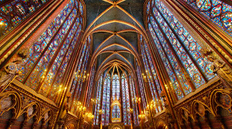
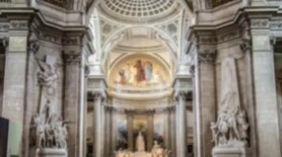

Eiffel Tower Guided Climb
- Take in the sights over the City of Love as you follow your guide to the second floor of the Eiffel Tower – a true icon of France.
- Enjoy climbing the Eiffel Tower to the second floor with The City of Your Dreams®
- Experience the Eiffel Tower from within on a tour led by an expert guide (674 stairs).
- Learn about the tower's fascinating engineering and some daredevil stunts that made history.
- Get a bird's eye view of the Louvre, Notre Dame, Sacré-Cœur, Les Invalides, and much more.
The Eiffel Tower, Paris's most recognizable monument and a symbol of France, is an unmissable stop on a trip to the French capital. Get to know this world-famous structure from the inside out with an expert-led tour up 700 steps to its Take in the sights over the City of Love as you follow your guide to the second floor of the Eiffel Tower – a true icon of France.
Normal ticket value: €34.00

Big Bus Hop-On Hop-Off
See the sights of Paris on Big Bus Paris Hop-On, Hop-Off bus at top attractions including the Louvre, Notre Dame and Orsay Museum.
- The most convenient and concise way to see the very best that Paris has to offer!
- Pre-recorded commentary in 11 languages via complimentary headphones.
A 1 Day Big Bus Paris Hop-On, Hop-Off Tour is one of the best ways to see the sights of Paris all in one go. With an extensive route made up of 10 stops at must-see destinations and landmarks around the capital, it’s often one of the most popular things to do when visiting the city – and with 11 languages available it’s perfect for the international tourist!
Normal ticket value: €42.00

Louvre Museum
Enjoy the Louvre Museum with The City of Your Dreams®
- Enjoy awe-inspiring, world-famous artworks
- Marvel at the glorious architecture
- See the Mona Lisa, Venus de Milo and more
The Louvre Museum is unquestionably one of the finest art galleries in the world. Home to hundreds of thousands of classic and modern masterpieces, the Louvre is the icing on the cake of French culture and a testament to European art history – it’s not surprising that it’s also the most visited art gallery in the world!
Normal ticket value: €17.00

Bateaux Parisiens River Cruise
Take a Bateaux Parisiens River Cruise with The City of Your Dreams®
- Enjoy a one hour cruise down the city's famous river, the Seine
- Learn about the city’s secrets and fascinating history
- Stay entertained with an audio guide in 13 languages
Get a unique perspective on Paris and take a majestic trip along the Seine River on the Bateaux Parisiens to discover the City of Lights from the water. Glide past the Notre Dame Cathedral and under the famous Pont Neuf, to name a few, starting your trip at the Eiffel Tower, or Notre Dame itself.
Normal ticket value: €17.00

Parc Astérix
Visit Parc Astérix with The City of Your Dreams®
- Hop on a range of rides and roller coasters.
- Enjoy a range of shows.
- Meet your favourite characters from the fantasy cartoon world.
Parc Astérix is the fantastical theme park based on René Goscinny and Albert Uderzo’s much-beloved comic book series The Adventures of Astérix (Astérix le Gaulois in French). The whole family will be thrilled by a day of riotous fun.
Normal ticket value: €55.00

French wine tasting at Les Caves du Louvre
Enjoy French wine tasting at Les Caves du Louvre with The City of Your Dreams®
- Discover how wine is made.
- Learn French grapes, French wine regions, Terroir, Appellations, How to Read Label.
- Discover many secrets of the wine world.
- Sensory visit stimulating your 5 senses.
The French are some of the best wine connoisseurs in the world (we even use their term for it!). Les Caves du Louvre is a superb historic wine cellar offering a memorable wine-tasting tour experience. Wine Tasting is an excellent way to help you learn the basics: colors, flavors, and smells of three wines in Les Caves du Louvre’s historic cellar.
Normal ticket value: €55.00

Arc de Triomphe
Visit the Arc de Triomphe with The City of Your Dreams®
- Stand on the viewing deck and drink in the views over Paris
- Visit the Tomb of the Unknown Soldier
- Enjoy the striking use of architectural styles of the arch
The Arc de Triomphe is perhaps the most iconic of all French monuments and without a doubt the most triumphal. Built between 1806 and 1836, it is iconic in style and sculpture of the decoration popular at the first half of the nineteenth century and visitors can admire its delicate design and engravings. Instantly recognizable and deeply evocative of the military history of France, the Arc de Triomphe provides a glimpse into France’s social past as well as spectacular views across central Paris.
Normal ticket value: €13.00

Notre Dame and the Archeological Crypt experience
Experience Notre Dame and the Archeological Crypt with The City of Your Dreams®
- With us, there are no entry fees on the day – all you've got to do is show your pass.
- An expert guide takes you on a 1-hour tour outside Notre Dame.
- This is followed by a self-guided tour into the crypt.
- Hear local stories of the tragedy of the 2019 blaze that caused so much damage.
- Get the inside scoop on how and when the cathedral will reopen...
Normal ticket value: €34.00

Tour Montparnasse
Experience the viewpoint at Tour Montparnasse with The City of Your Dreams®
- Get the best views across the City of Love from the 56th-floor
- Spot the most famous sights in Paris, including the Eiffel Tower
Named after Mount Parnassus, the Greek mountain, Montparnasse Tower is Paris’ only skyscraper and at 689ft high, the viewpoint from the 56th-floor terrace offers undoubtedly one of the best panoramas in the city. Second to the Eiffel Tower, Montparnasse Tower is a must-visit on a clear day to get spanning views across the capital – and if you’re lucky, you can even see up to 40km away! Look out for the main sights of Paris including Notre Dame, the Eiffel Tower and Sacré Coeur for a vista to remember.
Normal ticket value: €18.00

Montmartre & Sacré Coeur walking tour
Take a Montmartre & Sacré Coeur walking tour with The City of Your Dreams®
- Uncover the art and culture of this neighborhood where Van Gogh and Picasso once painted
- Enjoy gorgeous views of Paris from Montmartre’s hilltop
- See the last remaining vineyard in Paris
- Hear the colorful history of the Moulin Rouge, the birthplace of the can-can
On a hill in Paris' 18th arrondissement overlooking the city is Montmartre, a historic Parisian district synonymous with artists and cultural icons. During the Belle Époque, many artists worked and lived in Montmartre, including Modigliani, Monet, Degas, Toulouse-Lautrec, Picasso, van Gogh and more.
Normal ticket value: €18.00

Palace of Versailles
Visit the stunning Palace of Versailles with The City of Your Dreams®
- Walk in the footsteps of Louis XVI and Marie Antoinette
- Explore the palace, gardens and Grand Trianon
- Stay for a fountain show (this requires purchasing an extra ticket)
The Palace of Versailles is one of the largest and most opulent palaces in the world. A fine example of 18th-century French architecture and art, it is one of the most visited attractions in France, as well as being a UNESCO World Heritage site and must-see French landmark.
Normal ticket value: €18.00

Flyview Paris
Entry to Flyview Paris with The City of Your Dreams®
- Enjoy a 360° immersive experience filmed in high-resolution and delivered through state of the art VR headsets with special effects and 3D animations
- Discover unique stories about the capital explained by your virtual tour guide.
- Choose from three virtual reality experiences offering spectacular views of some of Paris’ most iconic monument
Flyview is a stylish cultural leisure site, offering spectacular virtual-reality experiences on The City Lights. Step into the unknown and discover Paris’ most exceptional locations from the comfort of this ultra-modern hub.
Normal ticket value: €31.50

Aquarium de Paris
Visit Aquarium de Paris with The City of Your Dreams®
- 50 tanks with 10,000 fish and invertebrates, including 2,500 jellyfish and 450 corals
- A 3 million liter basin housing 35 sharks
- A petting basin where you can feed and pet carp
The much-loved Paris Aquarium is one of the cities top attractions for the family. Did you know it boasts the title of the largest tank in France? With over 500 species living in over 3,500 m2 of water, visit Europe’s finest aquarium to discover an exciting and abundant natural world, all below the sea. You'll see sharks, sea urchins, clownfish and more, as you learn about their underwater life through the help of divers throughout the day.
Normal ticket value: €24.50

Perfume mini workshop by Fragonard
Enjoy Fragonard’s mini perfume workshop with The City of Your Dreams®
- Pay nothing at the door—simply show your pass.
- Take a guided tour of the museum, where you’ll discover exhibits including antique perfume bottles from ancient Mesopotamia to Fabergé.
- Make your very own eau de toilette in a 20-minute perfume workshop.
Learn about the history of perfume and experience a variety of olfactory delights on this very Parisian adventure.
Normal ticket value: €29.00

Musée d'Orsay
Step inside the Musée d'Orsay with The City of Your Dreams®
- Marvel at this glorious train station-turned-museum
- Explore the works of old masters
- Take the weight off at the museum's chic café situated behind the building's enormous clockface
Perched on the bank of the Seine, the Orsay Museum is an old turn-of-the-century railway station that was built on the site of the Palais d’Orsay.
Exemplary of the architecture of the Beaux-Arts movement, the Orsay Museum is one of Paris’ most popular art galleries and houses art and sculpture from 1848 to 1915.
Normal ticket value: €16.00

Ballon de Paris Generali
Enjoy a hot air balloon ride with The City of Your Dreams®
- Fly over Paris onboard the world's largest balloon at 150 meters altitude
- Discover the capital as you have never seen it before with 360° views over the city
- Your pass includes many more attractions in Paris, so don't forget to check them out!
Le Ballon is part of the best viewpoint of the capital. Thanks to a 360° panorama, admire the Eiffel Tower and the other emblematic monuments of the City of Light.
Normal ticket value: €15.00

Parisian Breakfast at Café Louise
Enjoy breakfast at Café Louise with The City of Your Dreams®
- Pay nothing at the door – simply show your pass.
- Includes a croissant, freshly-squeezed orange juice, a baguette, coffee, and fresh fruits
There's no better start to the day than a filling and flavorsome French breakfast. Tuck into tasty pastries, hot coffee, and fresh fruit before heading out to explore Paris.
Normal ticket value: €18.00

Hidden Gems in Le Marais – Walking Tour
Enjoy the Hidden Gems in Le Marais Walking Tour with The City of Your Dreams®
- Explore an authentic Parisian neighborhood and see where the locals like to hang out.
- Your pass includes many more attractions in Paris, so don't forget to check them out.
This 90-minute tour takes you to all the hidden hotspots you won't find in a typical guidebook. You'll wander through the beautiful Rue des Rosiers in the Jewish Quarter, along the cobblestone streets of Village Saint-Paul, and around the Place des Vosges - a 17th Century square where Victor Hugo lived. Along the way, your local guide will point out hidden gems steeped in history, trendy shops, and unusual attractions that travelers often miss.
Normal ticket value: €34.00

Orangerie Museum
Take a look inside the Orangerie Museumwith The City of Your Dreams®
- Explore the history of fascinating structure
- Peruse artwork by old masters
- This is the home of some of Monet's famous 'Water lilies' series
Situated on the bank of the Seine, in the picturesque Tuileries Gardens with the Louvre on one side and the Place de la Concorde on the other, the Orangerie Museum is filled with an inspiring collection of impressionist and post-impressionist masterpieces.
Normal ticket value: €9.00

Grévin Paris - Wax Museum
Visit Grévin Paris - Wax Museum with The City of Your Dreams®
- More than 200 celebrities to meet in all their waxy glory!
- Multi-sensory sound and light shows.
- There are dozens more top attractions available with your pass so be sure to check them out!
Meet your role model, favourite pop star or sporting hero at The Musée Grévin. Be amazed by the dramatic and lifelike scenes of historical and modern Paris, depicted by over 300 wax figures of the world’s most famous faces. Learn about major events in French for an entertaining educational experience.
Normal ticket value: €25.00

Latin District Selfie Tour
Enjoy a Latin District Selfie Tour with The City of Your Dreams®
- Pay nothing at the door – simply show your pass.
- Take a 90-minute tour of the Latin District.
On this 90-minute tour, you will learn all about the Latin District, but unlike other tours, you'll have plenty of time to get the perfect pictures along the way.
Normal ticket value: €34.00

Petit Train de Montmartre
Take a ride on the Petit Train de Montmartre with The City of Your Dreams®
- enjoy a leisurely tour up to the famous hilltop and take in the views along the way
- the kids will love this ride aboard the famous Petit Train de Montmartre
Enjoy a picturesque mini train ride through the atmospheric streets of Montmartre and look over the romantic views and sights of this vibrant neighborhood.
Normal ticket value: €7.00

Sainte-Chapelle
Take a look inside one of Christianity's most important siteswith The City of Your Dreams®
- Over 800 years of history is yours to explore
- 15 huge windows tell the story of over 1,100 biblical scenes
Sainte-Chapelle was an architectural and aesthetic marvel of its day and at one time the most important and holy place in the whole world.
Normal ticket value: €10.00

Walking Tour Along the Seine
Take a Walking Tour Along the Seine with The City of Your Dreams®
- Over 2.5 hours, a local expert shows you Paris' most famous sights along the famous river at its center
- Marvel at the unique architecture of the French capital and learn a little history en route
Along with those dreamy Parisian views, your expert guide will give the lowdown on the top things to see and do in Paris, making this a great starting point for exploring the city.
Normal ticket value: €30.00

Beer Tasting & Gifts at Maison BAPBAP
Enjoy Beer Tasting & Gifts at Maison BAPBAP with The City of Your Dreams®
- Taste two draft beers of your choice
- Free exclusive BAPBAP goodies
- Your pass includes many more attractions in Paris, so don't forget to check them out
Love beer? Try some authentic Parisian craft beers at this unique microbrewery. Enjoy a tasting experience that includes two hand-crafted draft beers of your choice and pick from a range of blondes, pale ales, IPAs, and more. With five different beers available, there’s one for everybody.
Normal ticket value: €15.00

Rex Studios: Les Etoiles du Rex
Entry to the Grand Rex Theatre with The City of Your Dreams®
- 45-minute audio-guided tour
- Fully-interactive displays
- Your pass includes many more attractions in Paris, so don't forget to check them out.
Thanks to an interactive itinerary, Rex Studio tour will allow you to discover the backstage of Europe’s largest movie theatre. Begin your tour inside of a transparent and panoramic elevator that will take you behind the gigantic screen of the Grand Rex.
Normal ticket value: €11.00

Rooftop of the Grande Arche
Enjoy the view from La Grande Arche de la Défense with The City of Your Dreams®
- Get the best views of the city among the skyscrapers of Paris' contemporary, western neighborhood
- Look down the entire length of one of the world's most famous avenues: the Champs Elysees
Designed by Danish architect Johan Otto von Spreckelsen and Danish engineer Erik Reitzel, La Grande Arche pays homage to Arc de Triomphe through shape and form. It stands today as one of the world’s most impressive high-rises.
Normal ticket value: €15.00

Stade de France
Enjoy a guided tour of the Stade de France with The City of Your Dreams®
- Tour Stade de France and walk in the shoes of some of France's most notable athletes.
- View the changing rooms and go pitchside
- Your pass includes many more attractions in Paris, so don't forget to check them out
Visit the Stade de France museum and explore the permanent exhibition of the Stade de France's history from 1995 to the present day. Retrace the iconic venue's construction and historic events that have taken place in the stadium. From archives and videos to replica sets, signed guitars, sports jerseys and more, there's plenty to discover!
Normal ticket value: €15.00

Panthéon
Explore the Panthéon with The City of Your Dreams®
- Explore this grandiose building that was built to rival St Peter's in Rome and St Paul's in London
- A permanent exhibition dedicated to the people buried here, such as Voltaire and Alexandre Dumas
The Panthéon is an impressive and imposing neoclassical edifice in which the remains of the most illustrious Frenchmen and women are kept and their deeds remembered.
Normal ticket value: €9.00

The Army Museum
Visit the Army Museume with The City of Your Dreams®
- See Napoleon's Tomb
- Explore the magnificent complex that houses military treasure from the age of Antiquity to the 20th century
- Peruse a vast collection of weapons and uniforms
The museum has a huge collection of military paraphernalia dating from antiquity to the present day.
Normal ticket value: €14.00

Dali Paris
Visit the Dali Paris exhibition with The City of Your Dreams®
- The only permanent museum and art gallery in France dedicated to Salvadore Dalí and his works
- Highlights major themes of universal literature, mythology, history, and religion
- Displays the artist’s most famous surrealist masterpieces including sculptures and illustrations
The Dali Paris exhibition is devoted to Salvador Dalí consisting mainly of sculptures and engravings. See some of Dali's famous works, including The Space Elephant and Alice and Wonderland, as well as unknown sketches
Normal ticket value: €13.00

Centre Pompidou
Visit the Centre Pompidou with The City of Your Dreams®
- Explore Europe's largest dedicated museum for modern art.
- See works by some of the world's most famous artists
- Marvel at the architecture of the building's unique structure
As Europe's largest modern art gallery, visitors can enjoy over 50,000 works of art and masterpieces by Picasso, Duchamp, Ernst and Miró.
Normal ticket value: €14.00

Picasso Museum
Visit the Picasso Museum with The City of Your Dreams®
- Discover awe-inspiring artworks and inspirational pieces used by the artist himself
- The collection includes paintings, sculptures, engravings, illustrations and more
The Picasso Museum in the stunning Hotel Salé is the most impressive and comprehensive collection of Picasso’s artworks in the world. With over 5,000 artworks, including tens of thousands of archived objects, the Picasso Museum isn’t short on a masterpiece or two.
Normal ticket value: €14.00

Rodin Museum
Visit the Rodin Museum with The City of Your Dreams®
- Explore the works of Rodin housed in this beautiful museum
- Enjoy a moment of calm in the pretty sculpture garden
In 1916, Rodin handed his collection over to the Government, both sculptures and drawings, along with the reproduction rights. The Musée Rodin opened its doors to the public on 4th August 1919.
Normal ticket value: €13.00

Basilica Cathedral of Saint-Denis
Visit the Basilica Cathedral of Saint-Denis with The City of Your Dreams®
- The basilica houses 70 sculptures to peruse
- This church was the first to place great importance on light, a symbol of divinity, in religious architecture.
The Basilique Royal de Saint-Denis is the burial place of French royalty in Paris. It is a necropolis, a stunning edifice to the dead, full of hauntingly beautiful funeral sculptures, mausoleums, and tombs. In the Basilica Cathedral of Saint-Denis, perhaps more than anywhere in Paris, the bloody power struggles of France resonate.
Normal ticket value: €9.00

Palais de la Découverte
Visit the Palais de la Découverte Science Museum with The City of Your Dreams®
- Discover awesome interactive exhibits a multitude of scientific disciplines
- The museum was created in 1937 by Jean Baptiste Perrin recipient of the Nobel Prize in Physics
Set within the stunning Grand Palais, the Palais de la Decouverte is one of Paris' most esteemed science museums. Explore the multi-disciplinary exhibitions of mathematics, physics, astronomy, chemistry, geology, and biology.
Normal ticket value: €9.00